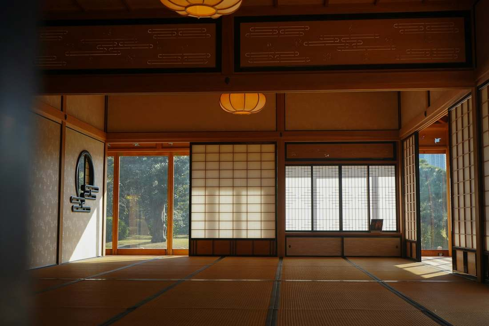
離れ
離れ「沢」
縁側のある和室と、源泉かけ流しの露天風呂。
62㎡ / 2-4 guests / 3 rooms / ¥52,800-
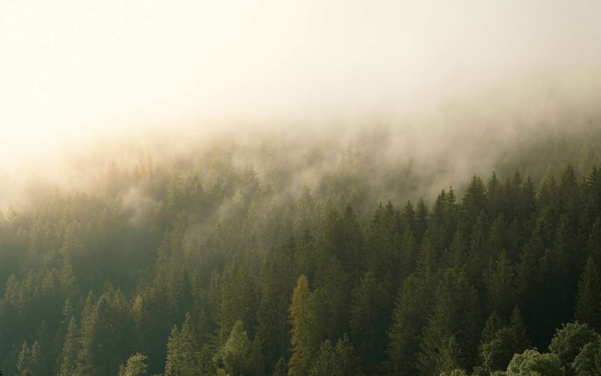
Hotorigi
湯治の宿から、九十四年。
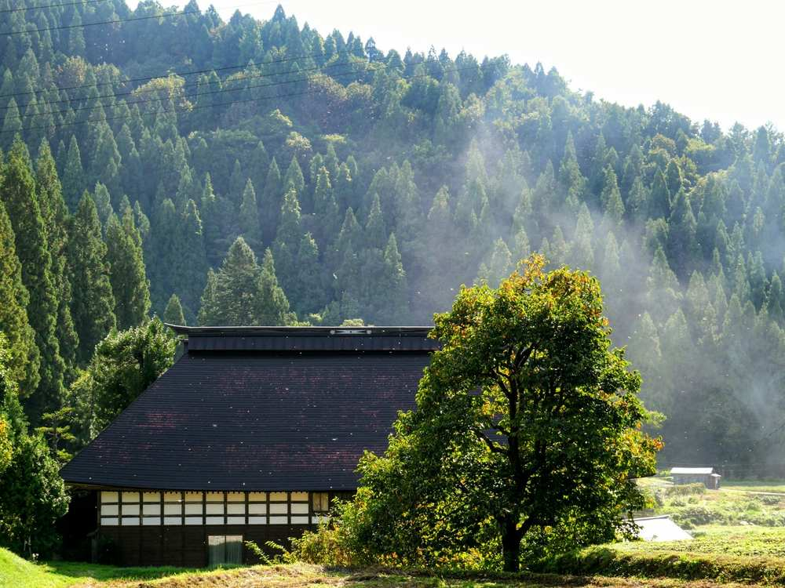
朝、聞こえるのは、沢の水音と鳥の声だけ。
1932年に湯治の宿として始まり、2021年に部屋を14から9に減らしました。広くなった部屋のすべてに、自家源泉の湯を引いています。客室にテレビは置きません。
Hot Spring / Forest / Silence / Stay
ふたつの客室

離れ
縁側のある和室と、源泉かけ流しの露天風呂。
62㎡ / 2-4 guests / 3 rooms / ¥52,800-
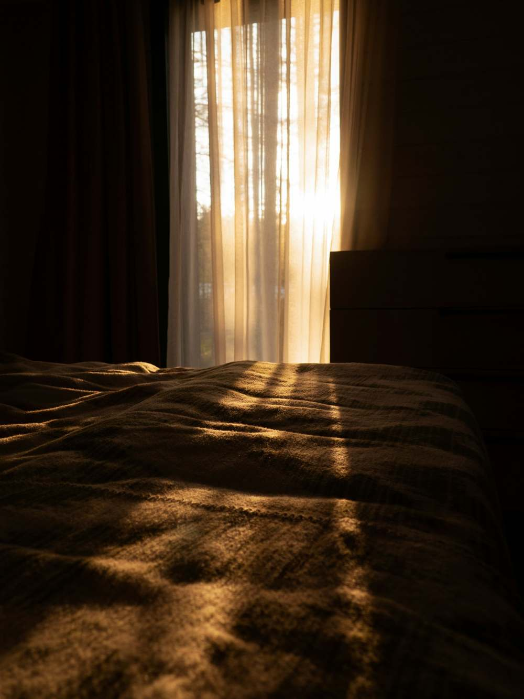
本館
森に向いた大きな窓と、ベッド2台、半露天風呂。
45㎡ / 1-2 guests / 6 rooms / ¥38,500-
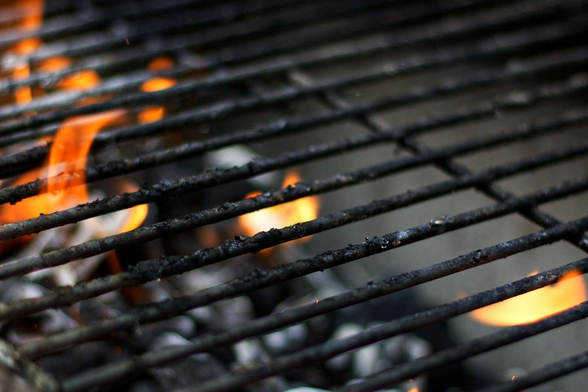
囲炉裏で焼く、山の料理。
炭で焼く川魚と猪肉、その朝に採った山菜。宿から半径30km以内でとれた食材が、全体の8割です。朝食は、土鍋で炊いたごはんと、地元の味噌の汁。
自家源泉、43.2℃のかけ流し。
敷地の中から湧く湯を、水で薄めず、温め直さずに、全室の風呂と2つの貸切風呂に引いています。貸切風呂は予約なしで、空いていれば何度でもお使いいただけます。
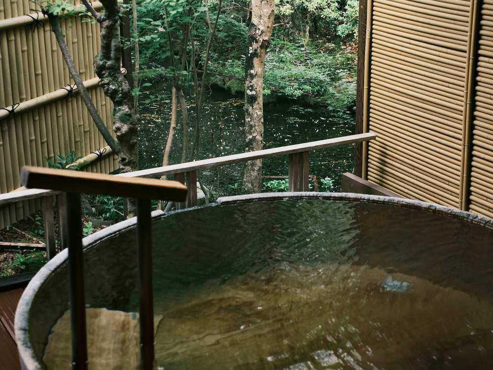
法人のご利用
全館を貸し切り、最大24名でお使いいただけます。広間を会議室にでき、プロジェクターとホワイトボードを用意しています。
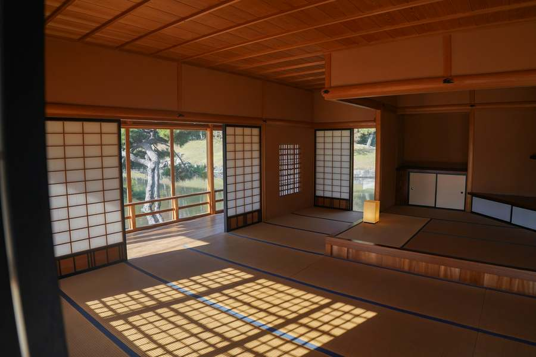
日曜から木曜の夜の連泊プランです。客室にデスクとWi-Fiを備え、昼食も付きます。3泊から。
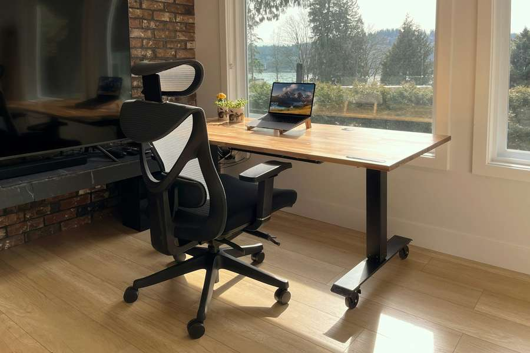
平日の11:00〜14:00、チェックアウトからチェックインまでの間に、館内と周りの森での撮影をお受けしています。
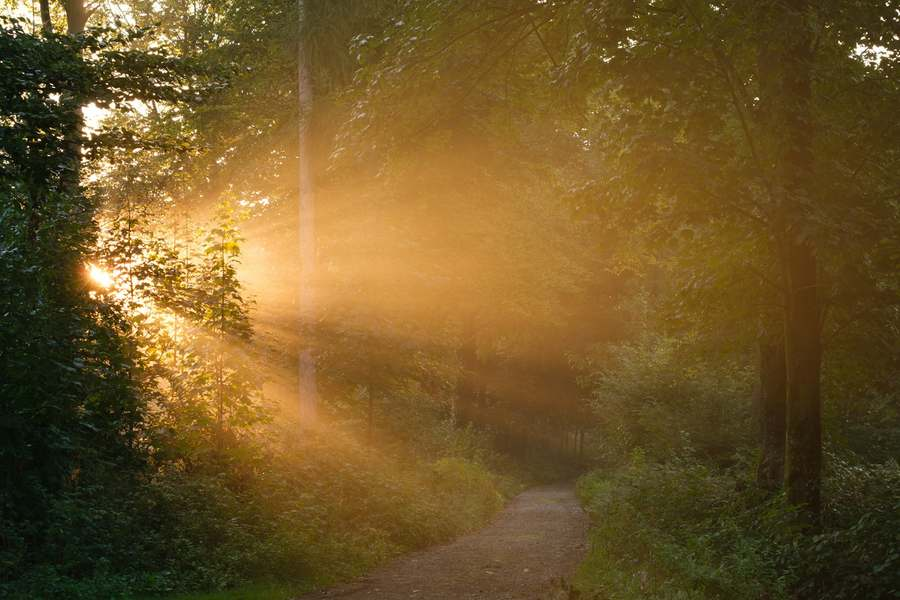
メディア
アクセス
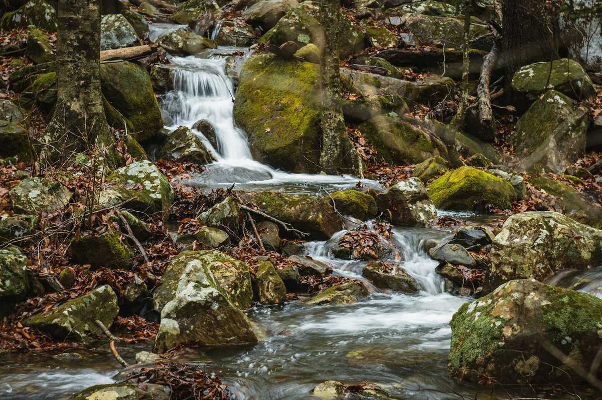
ご予約
公式サイトからのご予約には、湯上がりの地酒を1杯お付けしています。お電話でも承ります。法人のご相談もこちらから。
空室を確認するキャンセル料は、7日前から30%、前日50%、当日とご連絡のない不泊は100%です。
会社概要
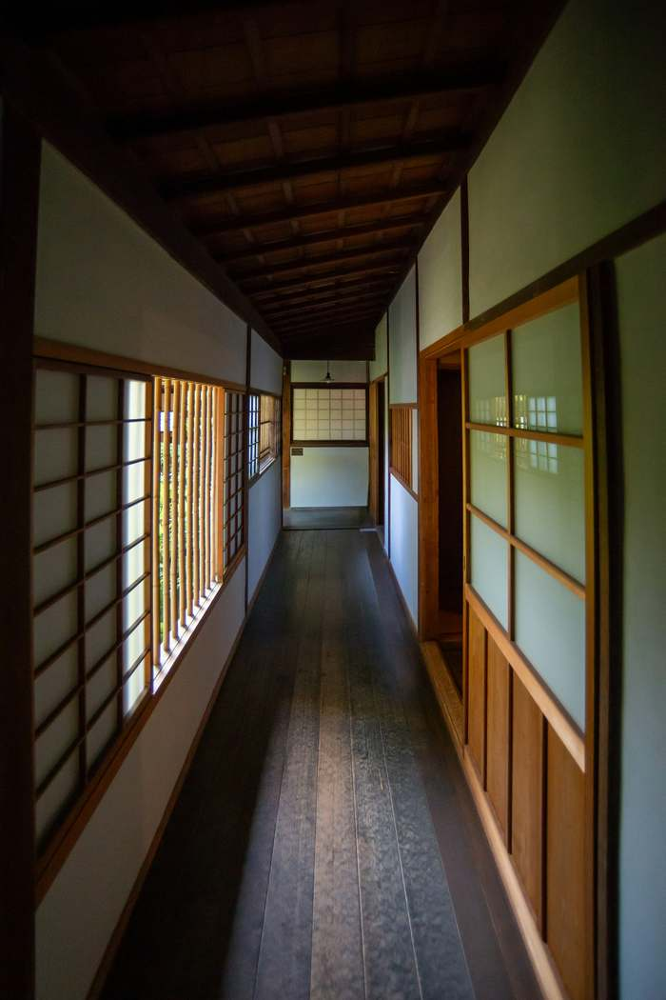